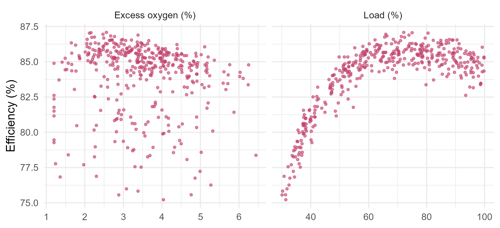

Module 7 · Lesson 9 of 14 Week 112 of 160 About 5–7 hours
Beyond linearity
Polynomials, steps, splines and additive models
A boiler’s efficiency rises with load to a peak and falls off steeply below it, and excess oxygen costs efficiency on both sides of a sweet spot. Fit those curves with polynomials, step functions, regression splines and smoothing splines, choosing each one’s flexibility by cross-validation. Then put several smooth curves in one model with a generalized additive model, read its partial effects, test for an interaction, and find the boiler’s best operating point.
The plant’s main boiler burns natural gas to raise steam, and every percentage point of efficiency is worth about €150,000 a year in gas. The utilities engineer logged 400 hours of operation: the load (steam output as a percentage of the boiler’s rating), the excess oxygen in the flue gas, the air temperature at the burner inlet, and the efficiency computed from the gas and steam flows.
Boiler engineers know the shapes to expect. Efficiency peaks somewhere around three-quarters load and falls off steeply at low load, where the fixed heat losses become a bigger share. Excess oxygen has a sweet spot: too much means heating air that does nothing but carry heat up the stack, and too little means incomplete combustion. Neither is a straight line:
long <- rbind(data.frame(x = boiler$load_pct, eff = boiler$efficiency_pct, v = "Load (%)"),
data.frame(x = boiler$excess_o2_pct, eff = boiler$efficiency_pct, v = "Excess oxygen (%)"))
ggplot(long, aes(x, eff)) + geom_point(color = "#C2416C", size = 0.9, alpha = 0.6) +
facet_wrap(~v, scales = "free_x") + labs(x = NULL, y = "Efficiency (%)") +
theme_minimal(base_size = 12)
Machine learning has very flexible methods for curves like these, coming in Lessons 10 and 11. This lesson stays closer to home: it extends the linear model, so that each predictor can have a curved effect, while the model stays easy to fit, to interpret and to test. These methods are workhorses of applied statistics, and in engineering they’re often all you need.
A boiler’s efficiency curve is a classic in any thermodynamics course. Today we let the data draw it, and then find the boiler’s best operating point!
In this lesson you’ll:
- fit polynomials and step functions, choosing their flexibility by cross-validation
- fit regression splines with
ns()andbs(), and smoothing splines withsmooth.spline() - fit a generalized additive model (GAM) with
mgcv::gam(), and read its smooth terms - predict with a GAM, test for an interaction, and find an optimum
The linear model, and what it misses
The setup code reads the 400 hours and makes 10 random folds. It also defines cv_rmse(), which returns the 10-fold CV RMSE of any lm() formula. (These are hourly averages from a steady boiler, so their errors are close to independent, and random folds are fine here.)
Your turn. Fit a linear model of efficiency on all three predictors, and find its R^2 and its 10-fold CV RMSE.
Cross-validate the same formula, f_lin.
f_lin <- efficiency_pct ~ load_pct + excess_o2_pct + air_temp_C
c(r_squared = summary(lm(f_lin, data = boiler))$r.squared, cv_rmse = cv_rmse(f_lin))An R^2 of 0.53 and a CV RMSE of 1.70 points. A straight line through a curve with a peak in the middle captures only the overall rise, and the residuals carry the rest of the shape. The rest of this lesson brings the CV RMSE down to 0.46.
Polynomials and step functions
The first two ways to bend a line, using load alone for now:
- Polynomial regression adds x^2, x^3, \ldots, x^d as predictors. It’s still a linear model, linear in the coefficients, so
lm()fits it. Its weakness is that it’s global: every coefficient affects the curve everywhere, and high-degree polynomials swing wildly at the ends of the data. - Step functions cut x into bins and fit a constant in each:
cut(x, breaks)makes a factor. They’re local, but blocky, and the bins’ edges are arbitrary.
Your turn. Find the CV RMSE of polynomials in load of degree 1 to 8.
The degree is the function’s argument, d.
cv_poly <- sapply(1:8, function(d) cv_rmse(efficiency_pct ~ poly(load_pct, d)))
round(cv_poly, 3)
which.min(cv_poly)Degree 4 is best, at 0.767, and degrees 3 to 8 are all within 0.01 of it. With load alone, about 0.77 is as low as any curve gets: the rest of the variation comes from the oxygen and the air temperature.
Your turn. Cut the load into 2, 4, 8, 16 and 32 equal-width bins, and find each step function’s CV RMSE.
k bins need k + 1 break points: length.out = k + 1.
sapply(c(2, 4, 8, 16, 32), function(k) {
breaks <- seq(29, 101, length.out = k + 1)
cv_rmse(efficiency_pct ~ cut(load_pct, breaks))
})2.05 with 2 bins, 1.24 with 4, 0.97 with 8, 0.84 with 16 and 0.85 with 32. More bins follow the curve better, until each bin holds too few hours to estimate its level well. Even the best step function is worse than the degree-4 polynomial (0.767), because inside each bin it ignores the slope, and on a curve as steep as this one at low load, that costs a lot. Step functions are most useful when the effect really does jump, at a regulation threshold or a change of equipment.
Regression splines
A spline combines the best of both: it’s a polynomial within each region, like a step function with sloping, curving pieces, and the pieces join smoothly at the boundaries, called knots. A cubic spline uses cubic pieces that join with matching values, slopes and curvatures, so the joins are invisible. It’s fitted by least squares on a set of basis functions, so lm() fits it too:
bs(x, df)makes a cubic spline basis with df - 3 interior knots, placed at quantiles of x;ns(x, df)makes a natural spline: a cubic spline that’s forced to be linear beyond the outermost knots. That tames the wild ends that plague polynomials, and costs fewer degrees of freedom.
Your turn. Find the CV RMSE of natural splines in load with 2 to 10 degrees of freedom.
Use df = d.
cv_ns <- sapply(2:10, function(d) cv_rmse(efficiency_pct ~ ns(load_pct, df = d)))
round(cv_ns, 4)
(2:10)[which.min(cv_ns)]7 degrees of freedom is best, at 0.771, very close to the best polynomial (0.767). On a smooth curve over a well-covered range, splines and polynomials do about equally well. The difference shows in extrapolation, below: a natural spline continues as a straight line, and a polynomial goes wherever its highest power takes it. Here the gap is modest, a few points just outside the data, but it grows quickly with the distance, and with higher degrees.
grid <- data.frame(load_pct = seq(20, 110, by = 0.5))
fits <- rbind(
data.frame(grid, eff = predict(lm(efficiency_pct ~ cut(load_pct, seq(29, 101, length.out = 9)), boiler),
data.frame(load_pct = pmin(pmax(grid$load_pct, 29.5), 100.5))), m = "step, 8 bins"),
data.frame(grid, eff = predict(lm(efficiency_pct ~ poly(load_pct, 4), boiler), grid), m = "polynomial, degree 4"),
data.frame(grid, eff = predict(lm(efficiency_pct ~ ns(load_pct, df = 7), boiler), grid), m = "natural spline, df 7"))
ggplot(boiler, aes(load_pct, efficiency_pct)) +
annotate("rect", xmin = 20, xmax = 30, ymin = -Inf, ymax = Inf, fill = "grey92") +
annotate("rect", xmin = 100, xmax = 110, ymin = -Inf, ymax = Inf, fill = "grey92") +
geom_point(color = "grey65", size = 0.8) +
geom_line(data = fits, aes(y = eff, color = m), linewidth = 0.8) +
scale_color_manual(values = c(`step, 8 bins` = "#1baf7a", `polynomial, degree 4` = "#2a78d6", `natural spline, df 7` = "#C2416C"), name = NULL) +
coord_cartesian(ylim = c(65, 90)) +
labs(x = "Load (%), gray: outside the data", y = "Efficiency (%)") +
theme_minimal(base_size = 12) + theme(legend.position = "top")
Smoothing splines
Regression splines need you to choose the knots, or at least how many. A smoothing spline sidesteps that: it puts a knot at every distinct x, and controls the wiggliness with a penalty instead, minimizing
\sum_i \big(y_i - g(x_i)\big)^2 + \lambda \int g''(t)^2 \, dt .
The integral of the squared second derivative measures roughness. With \lambda = 0, g interpolates the data; as \lambda \to \infty, it becomes a straight line. It’s the same idea as ridge regression, in Lesson 7: a penalty on complexity, with \lambda as the dial. smooth.spline() chooses \lambda automatically by generalized cross-validation (GCV), a fast approximation to leave-one-out CV, and reports the result as effective degrees of freedom.
Your turn. Fit a smoothing spline of efficiency on load, and find the effective degrees of freedom that GCV chose.
The response is efficiency_pct.
ss <- smooth.spline(boiler$load_pct, boiler$efficiency_pct)
ss$df10.2 effective degrees of freedom, a little more flexible than the best natural spline (7). That’s common: GCV tends to choose slightly wigglier fits than k-fold CV, and with a smooth true curve, the differences in prediction are tiny. smooth.spline(..., df = 7) would fix the flexibility instead of choosing it.
Generalized additive models
So far, one predictor at a time. A generalized additive model (GAM) gives each predictor its own smooth function, and adds them up:
y_i = \beta_0 + f_1(x_{i1}) + f_2(x_{i2}) + \cdots + f_p(x_{ip}) + \varepsilon_i .
Each f_j can be a spline, or linear, or a factor. The model keeps the most useful property of the linear model, additivity: each predictor’s effect can be plotted and understood on its own, holding the others fixed. “Generalized” means it extends to other response types, like logistic regression, through family =.
The mgcv package fits GAMs with penalized regression splines, s(x), and chooses each one’s smoothness automatically, much as smooth.spline() does.
Your turn. Fit a GAM with smooth functions of load and excess oxygen, and a linear term in the air temperature. Look at the smooth terms’ table and the R^2.
The second smooth is of excess_o2_pct.
g <- mgcv::gam(efficiency_pct ~ s(load_pct) + s(excess_o2_pct) + air_temp_C, data = boiler)
print(summary(g)$s.table)
summary(g)$r.sqAn R^2 of 0.967, against the linear model’s 0.53. The load’s smooth has 8.3 effective degrees of freedom (edf), and the oxygen’s 7.4: both are strongly curved. An edf near 1 would mean the term is close to a straight line. The air temperature’s linear coefficient, from coef(g), is 0.029: each extra degree of air temperature is worth 0.03 points of efficiency (warmer air needs less heating). The residual SD, 0.45, is the measurement noise: the GAM has captured essentially all the structure.
Each smooth term is a partial effect: the change in efficiency as that predictor varies, with the others held fixed. Here are both, with their 95% confidence bands:
g <- gam(efficiency_pct ~ s(load_pct) + s(excess_o2_pct) + air_temp_C, data = boiler)
mk <- function(v, lab) {
nd <- data.frame(load_pct = 70, excess_o2_pct = 3, air_temp_C = 12)[rep(1, 200), ]
nd[[v]] <- seq(min(boiler[[v]]), max(boiler[[v]]), length.out = 200)
pr <- predict(g, nd, type = "terms", se.fit = TRUE)
k <- paste0("s(", v, ")")
data.frame(x = nd[[v]], fit = pr$fit[, k], lo = pr$fit[, k] - 2 * pr$se.fit[, k], hi = pr$fit[, k] + 2 * pr$se.fit[, k], v = lab)
}
pe <- rbind(mk("load_pct", "Load (%)"), mk("excess_o2_pct", "Excess oxygen (%)"))
ggplot(pe, aes(x, fit)) + geom_ribbon(aes(ymin = lo, ymax = hi), fill = "#F4C0D1") +
geom_line(color = "#C2416C", linewidth = 0.9) + geom_hline(yintercept = 0, color = "grey70") +
facet_wrap(~v, scales = "free_x") + labs(x = NULL, y = "Partial effect on efficiency (points)") +
theme_minimal(base_size = 12)![Two panels showing the GAM's partial effects on efficiency, centered at zero. Load: a curve rising steeply from about minus 8.6 points at 30 percent load to a peak of about plus 1.7 near 74 percent, then easing down to about plus 0.5 at 100 percent. Excess oxygen: a curve that rises steeply from about minus 1.8 at 1.2 percent to a peak of about plus 0.75 near 2.3 percent, then falls almost linearly to about minus 1.5 at 6.4 percent. The confidence bands are narrow, wider at the ends of the oxygen range.](09-nonlinear_files/figure-html/unnamed-chunk-19-1.png)
Your turn. Predict the efficiency at 75% load and an air temperature of 12 °C, for excess oxygen of 1.5, 2, 2.5, 3, 4 and 5%.
The air temperature is 12 °C.
g <- mgcv::gam(efficiency_pct ~ s(load_pct) + s(excess_o2_pct) + air_temp_C, data = boiler)
nd <- data.frame(load_pct = 75, excess_o2_pct = c(1.5, 2, 2.5, 3, 4, 5), air_temp_C = 12)
round(predict(g, nd), 2)85.0% at 1.5% oxygen, 86.3 at 2%, 86.4 at 2.5%, 86.1 at 3%, 85.6 at 4% and 85.0 at 5%. The sweet spot is between 2 and 2.5%, the curve is steep on the low side (incomplete combustion) and gentle on the high side (heating extra air). The boiler’s operators typically run at 3.4% (the median), which is safe but costs about 0.5 points: roughly €75,000 a year, by the engineer’s rule of thumb. A good reason to tune the oxygen trim controller, carefully, given the cliff below 2%.
Your turn. Compare the 10-fold CV RMSE of the linear model and the GAM, on the same folds.
Predict the held-out fold, boiler[fold == j, ].
err <- numeric(400)
for (j in 1:10) {
fit <- mgcv::gam(efficiency_pct ~ s(load_pct) + s(excess_o2_pct) + air_temp_C, data = boiler[fold != j, ])
err[fold == j] <- boiler$efficiency_pct[fold == j] - predict(fit, boiler[fold == j, ])
}
c(linear = cv_rmse(efficiency_pct ~ load_pct + excess_o2_pct + air_temp_C), gam = sqrt(mean(err^2)))1.70 for the linear model, 0.46 for the GAM: almost four times smaller, and at the noise level. An additive model with natural splines (ns(load_pct, 5) + ns(excess_o2_pct, 5) + air_temp_C, fitted by lm()) gets 0.48, nearly as good: the automatic smoothness selection gains a little, and saves choosing the knots.
NoteGo deeper: how mgcv chooses the smoothness
s(x) builds a thin-plate regression spline: a basis of (by default) 10 functions, with a penalty \lambda_j \beta_j^\top S_j \beta_j on each term’s wiggliness, like a smoothing spline’s \int g''^2. The GAM is then a penalized least-squares (or penalized likelihood) problem, and the \lambda_j are chosen by GCV (the default for gam()) or by REML, which treats the penalized coefficients as random effects, as in Module 3’s mixed models. Simon Wood, mgcv’s author, recommends method = "REML": it’s less prone to undersmoothing. The edf of each term is the trace of its part of the “hat” matrix, the same effective degrees of freedom as in ridge regression. If an edf is close to the basis size minus one (9, by default), the basis may be too small: gam.check() tests that, and s(x, k = 20) enlarges it.
Challenge round
Challenge 1 · Is there an interaction? Additivity assumes that the oxygen’s effect is the same at every load. Add a tensor-product interaction, ti(load_pct, excess_o2_pct), and test it against the additive model with anova(..., test = "F"). Fit both with method = "REML".
The interaction term is ti(load_pct, excess_o2_pct).
g_add <- mgcv::gam(efficiency_pct ~ s(load_pct) + s(excess_o2_pct) + air_temp_C, data = boiler, method = "REML")
g_int <- mgcv::gam(efficiency_pct ~ s(load_pct) + s(excess_o2_pct) + ti(load_pct, excess_o2_pct) + air_temp_C,
data = boiler, method = "REML")
a <- anova(g_add, g_int, test = "F")
a$`Pr(>F)`[2]p = 0.39: no evidence of an interaction. The interaction term’s edf is 1.0, the smallest it can be, so REML has shrunk it to almost nothing. The additive model is enough: the best oxygen level is the same at every load. ti() adds only the interaction, on top of the main effects; te() would fit the whole two-dimensional surface in one term.
Challenge 2 · The best load. The plant can share steam demand between two boilers, so it can choose each one’s load. Use optimize() on the GAM’s prediction to find the load with the highest efficiency, at 2.5% oxygen and 12 °C air.
optimize() minimizes unless maximum = TRUE.
g <- mgcv::gam(efficiency_pct ~ s(load_pct) + s(excess_o2_pct) + air_temp_C, data = boiler)
best <- optimize(function(l) predict(g, data.frame(load_pct = l, excess_o2_pct = 2.5, air_temp_C = 12)),
interval = c(30, 100), maximum = TRUE)
c(load = best$maximum, efficiency = unname(best$objective))74% load, for an efficiency of 86.4%. The peak is broad: from the partial effect, anywhere between about 65% and 85% load is within a few tenths of a point of it. For two identical boilers sharing a total demand of 150%, running both at 75% (86.4% each) beats running one at 100% (85.2%) and the other at 50% (84.4%). That’s the kind of decision a smooth, interpretable model supports and a black box makes harder. Because the model is additive, the best load doesn’t depend on the oxygen level or the air temperature.
Quick quiz
1. Why can lm() fit a degree-4 polynomial?
Splines work the same way: lm() on a set of basis functions.
2. What’s the main weakness of a high-degree polynomial?
Splines are local, and natural splines are linear beyond the outer knots.
3. What is a knot?
In a cubic spline, the pieces join with matching values, slopes and curvatures.
4. What controls a smoothing spline’s flexibility?
It has a knot at every data point; the penalty does the smoothing, chosen by GCV.
5. What does “additive” mean in a GAM?
Interactions can be added explicitly, with ti() or te().
6. A smooth term in a GAM has an edf of 1.0. What does that mean?
Larger edf means more curvature.
Wrap-up
You can now fit curved relationships while keeping a model you can read. Here’s what you’ve learned:
- Polynomials are linear models in powers of x: degree 4 in load gave a CV RMSE of 0.767. They’re global, and wild at the edges.
- Step functions cut x into bins: local but blocky.
- Regression splines join polynomial pieces smoothly at knots. Natural splines are linear beyond the outer knots: 7 df was best, at 0.771.
- Smoothing splines penalize roughness, and GCV chose 10 df.
- GAMs add a smooth function of each predictor: the boiler GAM’s CV RMSE was 0.46, against 1.70 for the linear model, with R^2 = 0.967.
- Partial effects showed an efficiency peak near 74% load and an oxygen sweet spot between 2 and 2.5%, and a test found no interaction.
TipPractice in RStudio (optional, about an hour)
Download boiler_efficiency.csv into your project’s data-raw/ folder, and use mgcv (it comes with R).
- Plot the GAM.
plot(g, pages = 1, residuals = TRUE)draws the partial effects with partial residuals. Do the residuals show any pattern the smooth missed? - Check the basis. Run
gam.check(g). Is the default basis size big enough for load? - Local regression. Fit
loess(efficiency_pct ~ load_pct, span = s)for spans of 0.2, 0.4 and 0.75, and compare their fits with the natural spline. - A logistic GAM. Define a “poor hour” as efficiency below 84%, and fit
gam(poor ~ s(load_pct) + s(excess_o2_pct), family = binomial). Plot the partial effects on the log-odds scale.
NoteKey words from this lesson
- Polynomial regression
- A linear model with powers of a predictor, x, x^2, \ldots, x^d, as terms.
- Step function
- A piecewise-constant fit, made by cutting a predictor into bins.
- Knot
- A point where the pieces of a spline join.
- Cubic spline
- A piecewise cubic polynomial whose pieces join with continuous first and second derivatives.
- Natural spline
- A cubic spline constrained to be linear beyond its boundary knots.
- Smoothing spline
- A function that minimizes the residual sum of squares plus a penalty on its roughness, \lambda\int g''(t)^2dt.
- Generalized additive model (GAM)
- A model in which the response (or its link) is a sum of smooth functions of the predictors.
- Partial effect
- The change in the response as one predictor varies with the others held fixed.
- Generalized cross-validation (GCV)
- A fast approximation to leave-one-out CV for linear smoothers.
NoteWant to read more?
- James, Witten, Hastie and Tibshirani, An Introduction to Statistical Learning (2nd edition), chapter 7, “Moving Beyond Linearity”, which covers every method in this lesson.
- Simon Wood, Generalized Additive Models: An Introduction with R (2nd edition, CRC Press, 2017). The book by mgcv’s author.
- Noam Ross, GAMs in R, a free, interactive online course on mgcv.